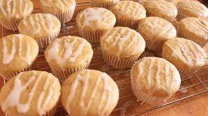

How to make cupcakes
Cupcakes are delicious & small snacks and can be made easily~

Ingredients:
- Flour
- Sugar
- Eggs
- Butter
- Milk
- Baking powder
- Vanilla extract
Instructions:
- Set your oven to 180°C (350°F). Line a cupcake tray with paper liners.
- In a bowl, beat the butter and sugar together until light and fluffy.
- Add the eggs one at a time, mixing well after each. Stir in the vanilla extract.
- In a separate bowl, combine the flour and baking powder.
- Gradually add the dry ingredients to the butter mixture, alternating with milk. Mix until just combined, do not overmix.
- Spoon the batter into the liners, filling each about ⅔ full.
- Bake for 18-22 minutes, or until a toothpick inserted into the center comes out clean.
- Let the cupcakes cool before removing from the tray.